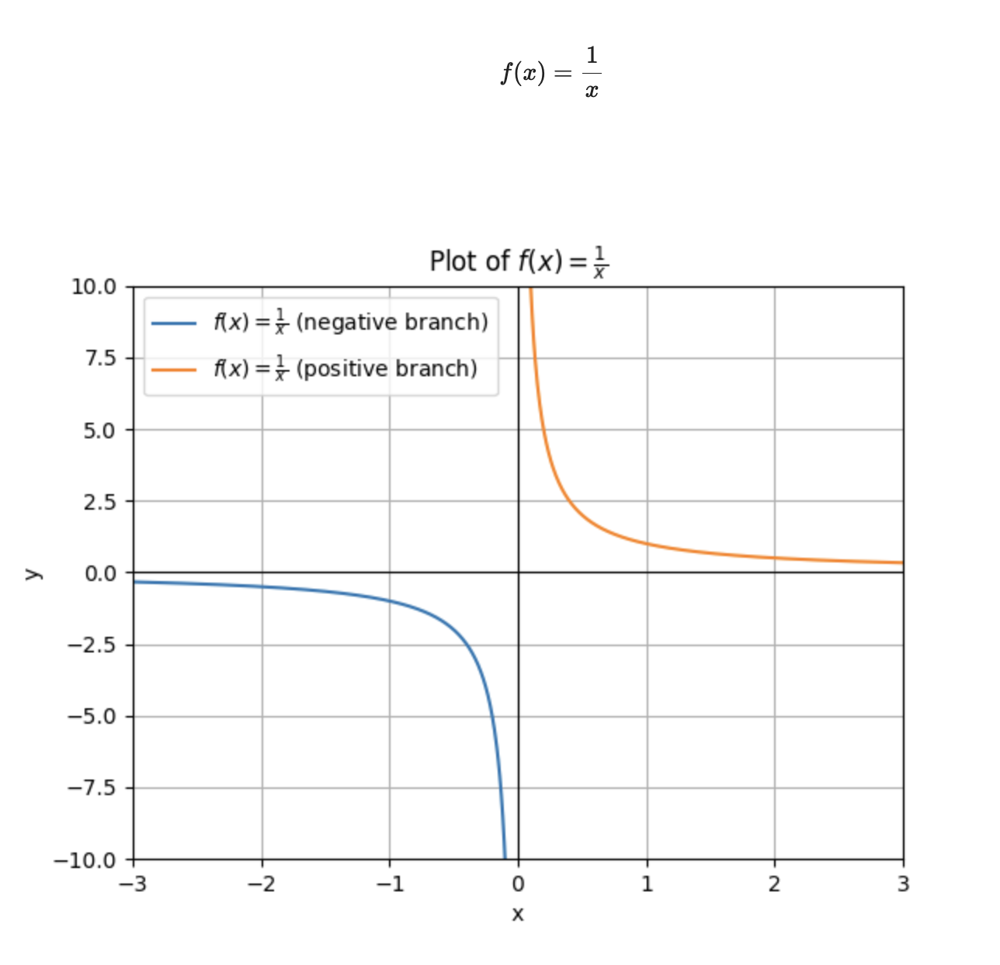
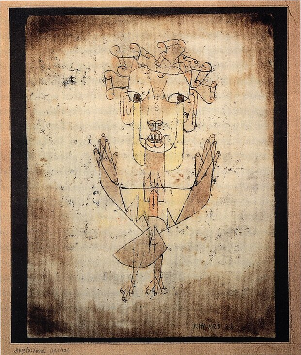

Artificial General Intelligence (AGI)
Artificial Super Intelligence (ASI)
Artificial General Intelligence (AGI)
Artificial Super Intelligence (ASI)| “We are in every way the self-consciousness of
history” - Nietzsche |
Artificial General Intelligence (AGI)
Artificial Super Intelligence (ASI)
 “The hand-mill gives you society with the feudal
lord; the steam-mill, society with the industrial
capitalist” (Marx, 1847)
“The hand-mill gives you society with the feudal
lord; the steam-mill, society with the industrial
capitalist” (Marx, 1847)| 1. Geschichte = “history” in a broad sense (events
that happen, or a story). 2. Historie = “historiography” or the academic/scientific approach to the past. 3. Historicism = History is determined - it follows a pathway towards an end (Hegel’s Lectures on the Philosophy of History) 4. Geschichtlichkeit = Heidegger’s existential notion of being historical, usually translated as “historicity” or “historicality.” |
| A Klee painting named Angelus Novus shows an angel looking
as though he is about to move away from something he is fixedly
contemplating. His eyes are staring, his mouth is open, his wings are
spread. This is how one pictures the angel of history. His face is
turned toward the past. Where we perceive a chain of events, he sees one
single catastrophe that keeps piling wreckage upon wreckage and hurls it
in front of his feet. The angel would like to stay, awaken the dead, and
make whole what has been smashed. But a storm is blowing from Paradise;
it has caught in his wings with such violence that the angel can no
longer close them. This storm irresistibly propels him into the future
to which his back is turned, while the pile of debris before him grows
skyward. This storm is what we call progress. (Benjamin, Thesis IX,
“Theses on the Philosophy of History”, 1940) |
 |